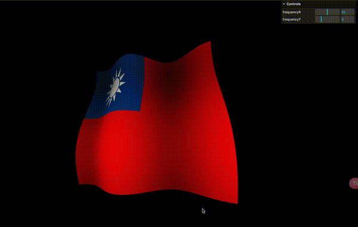

前言
這是我第一篇學習 shader 的文章，藉由上完 three.js journey lessons 27 - Shaders 後，嘗試延伸用老師的範例畫出自己國家的國旗
為什麼需要寫 shader?
Three.js 裡已經有內建各式各樣的 Geometry (ex. PlaneGeometry, BoxGeometry) 可以創建不同形狀的物體，但如果需要對這些 Geometry 裡個別的頂點們進行操作 (ex. 改變位置、顏色) 就需要 Shader 來進行精細的操作
著色器渲染管道 (Shader pipeline)
實際上 Shader 的渲染是一連串操作的過程 (pipeline)，shaders 們依序處理各自負責的任務

1. 頂點數據 (vertex/index buffer)
從 three.js 的角度來看，圖中最一開始輸入的 vertex/index buffer 代表的是頂點數據，也就是在 geometry.attribute.position 裡 3D 物件的頂點座標
2. 頂點著色器 (vertex shader)
接著輸入的頂點數據會傳到 頂點著色器 (vertex shader) ，頂點著色器 (vertex shader) 最終會將這些頂點數據從 本地座標 (local coordinates) 轉換成 螢幕座標 (screen coordinates) ，這個 螢幕座標 (screen coordinates) 代表的就是最後在螢幕上使用者看到 3D 物件的樣子
3. 光柵化 (rasterization)
雖然 頂點著色器 (vertex shader) 已經算出各頂點該在螢幕上的哪裡出現，但螢幕有所謂的最小單位 - 像素點，也就是說一個像素點中只能是同一種顏色，在 光柵化 (rasterization) 的過程中，會輸入 頂點著色器 (vertex shader) 拿到的頂點，並決定這些頂點區域內的哪些像素是需要被渲染的(也就是圖中塗黑的塊狀部分)
4. 片段著色器 (fragment shader)
光柵化 (rasterization) 輸出最終會被渲染到螢幕上的像素，在英文中這些需要被渲染的像素點們被叫做 - 片段 fragment。決定哪些像素點需要渲染後，片段著色器 (fragment shader) 會為每一個點渲染顏色
以上是關於 Shader 的簡易介紹，了解這些前置知識後就可以練習如何用 three.js 來寫 shader 了
用 three.js 寫一個最基礎的 shader
在 three.js 中可以使用 THREE.RawShaderMaterial 來撰寫 shader，以下範例畫出一個紅色的平面
1 | import vertexShader from './vertex.glsl'; |
1 | // vertex.glsl |
1 | // fragment.glsl |
沒有接觸過的 shader 的我，看到這些完全一頭霧水，uniform mat4 是什麼東東？啥是 modelMatrix？為什麼三種 matrix 接續乘在一起等於 gl_Position? 還好最基本的 shader 程式並不長，接著讓我們來一步步學習
Vertex shader 做的事情
從前面可以知道在整個 shader pipeline 中，vertex shader 負責把 輸入的頂點數據 轉換為 螢幕座標 (screen coordinates) ，這也就是最後一行 gl_Position 所代表的意思，而中間使用到的 modelMatrix, viewMatrix, projectionMatrix 其實也就是對不同座標系進行轉換的矩陣

modelMatrix將 本地座標 (local coordinate) 轉換到 世界座標 (world coordinates)viewMatrix將 世界座標 (world coordinates) 轉換到 視圖座標 (view coordinates)projectionMatrix將 視圖座標(view coordinates) 轉換到 裁剪座標 (clip coordinates)- 最後會有一個 視圖轉換 (viewport transform) 的過程，會根據每個螢幕不同的大小 (ex. 800x600, 1440x900 等) 將 裁剪座標(clip coordinates) 轉換為 螢幕座標 (screen coordinate) ，此時就是我們實際在螢幕上看到 3D 物件呈現的樣貌了
Fragment shader 做的事情
Fragment shader 會拿到 vertex shader 那邊過來每個點的座標，在這裡需要決定每個點渲染出來的顏色並傳遞到 gl_FragColor 中，gl_FragColor 是一個四個向量的 vec4 代表 (r, g, b, a) ，最後一個 a 是 alpha 代表透明度 - 從 0.0 的完全透明 到 1.0 完全不透明
而 rgb 的範圍也是從 0.0 ~ 1.0，從 0.0 的顏色越淺 到 1.0 的顏色越深，所以 gl_FragColor = vec4(1.0, 0.0, 0.0, 1.0) 這行程式渲染出來的會是不透明的純紅顏色
Shader 的變量類型
到目前為止我們已經了解 shader 渲染的過程了，接著讓我們來看看如何撰寫 shader 的關鍵 - 定義 shader 中的變量類型
1 | uniform mat4 modelMatrix; |
定義一個變量時前面會有兩個關鍵字，以 modelMatrix 來說就是 uniform 及 mat4
uniform 代表的是這個變量的作用域，有點類似 Javascript 中 const, let 的感覺，他的意思是這個變量的數值在整個 shader 的繪圖過程中都是保持不變的，而 mat4 是這個變量的數據型別代表 4x4 的矩陣
接著來看看除了 uniform 外還有哪幾種關鍵字可以定義變量的作用域：
| 關鍵字 | 使用範圍 | 說明 |
|---|---|---|
| uniform | vertex shader & fragment shader | 全局變量，數值在整個繪圖過程中都保持不變 |
| attribute | vertex shader | 頂點數據，也就是 geometry.attribute 裡的那些數值 (預設有 position, uv, normal) |
| varying | vertex shader & fragment shader | 插值變量，用於將數值從 vertex shader 傳遞到 fragment shader |
另外下表列出一些常見的數值類型：
| 數值類型 | 說明 | 範例 |
|---|---|---|
| int | 整數 | int a = 10; |
| float | 浮點數 | float b = 3.14; |
| vec2 | 二維向量 | vec2 c = vec2(0.5, 1.0); |
| vec3 | 三維向量 | vec3 d = vec3(1.0, 0.0, 0.0); |
| vec4 | 四維向量 | vec4 e = vec4(1.0, 0.0, 0.0, 1.0); |
| mat4 | 4x4 矩陣 | mat4 m = mat4(1.0); |
| sampler2D | 二維紋理取樣器 | uniform sampler2D texture1; |
一開始看到這些想必也是霧煞煞的，不知道實際應用的地方，但沒關係接下來要開始利用目前學到的東西來畫出自己國家的國旗，下面我們會用到各種 attribute, varying, vec4, sampler2D 等關鍵字，學習如何定義變數類型及使用的地方
Shader 數值的精度設置
1 | precision mediump float; |
在 fragment shader 中，我們可以看到這一行的設置，這行的意思是將 float 類型變數的精度設置為 mediump，在 fragment shader 中開發者可以根據渲染 3D 物件、場景的需求，去設定變數數值的精細度需要多高
| 精細度 | 說明 | 適用場景 |
|---|---|---|
| highp | 高精度 (32 位浮點數) | 需要高精度的計算，例如：光照、物理模擬等 |
| mediump | 中精度 (16 位浮點數) | 對精度要求中等的場景，例如：紋理 UV 坐標、顏色 |
| lowp | 低精度 (8 位浮點數) | 不太需要精度的場景，例如：簡單的顏色計算 |
範例：操作 shader 畫出國旗
Online Demo
1. 創建平面
一開始先利用 THREE.PlaneGeometry 創建平面，並將這個 Plane 的 material 設置成 THREE.RawShaderMaterial 用來載入自己寫的 shaders
1 | import vertexShader from './shaders/vertex.glsl'; |
這裡創建了 3 個 uniforms 傳遞給 vertex shader
uFrequency
調整國旗在 x, y 軸方向的起伏頻率，結合右上角的控制滑動條，可以看到起伏頻率改變的效果uTime
一個不斷隨時間增加的變數，主要是讓國旗隨著時間有動態的起伏，而不是只在螢幕上顯示靜態的國旗uTexture
引入國旗的圖案，之後會將這個 texture 丟入到 fragment shader 將國旗圖片渲染到平面上
2. 撰寫 vertex shader
1 | uniform mat4 modelMatrix; |
elevation
運用 sin 函數可以控制輸出在 -1 ~ +1 的特性，達到 x, y 軸有上下起伏的效果
第一次計算elevation時輸入modelPosition.x * uFrequency.x，讓控制條可以調整 x 軸起伏的次數
第二次計算elevation時輸入modelPosition.y * uFrequency.y，讓控制條可以調整 y 軸起伏的次數
在 sin 函數中還加入uTime的變數，讓國旗可以有不斷飄揚的效果
最後將計算的elevation加到modelPosition.z上，這樣在視線的方向上就可以看到高低起伏的國旗飄揚varying
這裡定義了兩個varying-vUv跟vElevation，作用其實很簡單就只是把 vertex shader 中的數值傳遞到 fragment shader 中用
3. 撰寫 fragment shader
1 | precision mediump float; |
sampler2Dsampler2D是一個特殊的語法，用途是取出圖片中的顏色
在這裡輸入的第一個參數uTexture是從 three.js 傳過來的國旗圖片，第二個的參數vUv則是平面的 uv 座標，輸出textureColor代表的是圖片中每個點的顏色vElevationtextureColor.rgb *= vElevation * 2.0 + 0.65;這一行目的是讓每個點的亮度隨著vElevation的大小改變，當vElevation越小的時候計算出來的 rgb 就越小也就是越暗，所以在畫面上可以看到在谷底(遠離視線)的地方會有比較暗的陰影效果
延伸補充
1. THREE.RawShaderMaterial 與 THREE.ShaderMaterial 的差別
上面都使用 THREE.RawShaderMaterial 引入 shader，但其實還可以用 THREE.ShaderMaterial 簡化寫法
ShaderMaterial 跟 RawShaderMaterial 幾乎是一樣的，差別只是使用 ShaderMaterial 時，vertex shader 跟 fragment shader 都會在最上面自動注入預設變量，可以少寫幾行程式
例如：原本使用 THREE.RawShaderMaterial 載入 vertex shader 需要定義 modelMatrix, viewMatrix, projectionMatrix 跟 position
1 | // vertex.glsl |
但使用 THREE.ShaderMaterial 後會自動在 vertex shader 檔案最上面注入這些變數，就不用再自己寫了
1 | // vertex.glsl |
2. 為什麼 vertex shader 不用設置變數精細度？
根據 OpenGL ES 2.0 的規範，如果沒有顯式設置 float 類型的預設精度，則預設為 highp。而 fragment shader 沒有 float 類型的預設精度，所以必須要自己設置
Why it is necessary to set precision for the fragment shader?